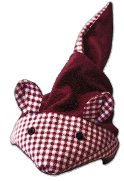

Die Körnermaus
Und wäre gern in jedem Haus!
Die Linderung von allen Schmerzen
Liegt mir natürlich sehr am Herzen.
Ob Luft im Darm, ob Schmerz im Arm,
die schaffe ich mit meinem Charme!
Im Backofen bei 100°C
In 20 Minuten bin ich parat.
Auf der Heizung lass´ ich mich auch wärmen (60 min)
Ich höre dich schon von mir schwärmen.
Und brauchst Du mal Kühle gegen Schmerz,
leg´ mich in die Truhe, das ist kein Scherz! (60 min)
So hilft Dir die Natur im Korn,
Du fühlst Dich fit, bist stets in Form!
GUTE GESUNDHEIT!
Dinkelmaus - Das Geschenk für Groß und Klein!
Die Dinkelmaus ist ein tolles Körnerkissen, gefüllt mit 1200 Gramm deutschem Qualitätsdinkel. Sie kann als Wärme- (Mikrowelle/Backofen) oder Kältekissen (Gefrier-/Kühlschrank) eingesetzt werden. Besonders praktisch ist ihre große, flexible Form. Dadurch können die Körner nach Belieben verteilt und die Maus einfach um den Hals gebunden werden! Verspannungen und Nackenschmerzen verfliegen so im Handumdrehen. Das Dinkelkorn gibt die angenehme Wärme gleichmäßig ab. Das Kissen eignet sich daher als Geschenk für jede Altersgruppe! Jede Dinkelmaus verschicken wir mit einer passenden Dinkelmaus-Tüte sowie einem Flyer mit genauen Anwendungshinweisen.
Vielseitig einsetzbar: Wenn man die Maus wie eine Wärmflasche verwenden möchte (z.B. gegen Bauchschmerzen), so kann man sie einfach zu einem Paket zusammenknoten, die spezielle Punkte gezielt wärmen kann. Mit Liebe zum Detail wird jede Maus in Heiligenberg (DE, 88633) genäht und von Hand gefüllt. Unterschiedliche Stoffe sorgen für ein individuelles Aussehen (siehe Varianten und Preise): Jede Dinkelmaus ist ein Unikat - und für jeden Geschmack ist etwas dabei.
Viele Vorteile...
Dinkelkissen haben einige Vorteile gegenüber den bekannten Kirschkern-Kissen, denn das weichere Urkorn nimmt Feuchtigkeit besser auf und speichert damit die Wärme länger. Es sorgt zudem für ein besseres Wohlbefinden (als bei trockener Wärme). Außerdem duftet jedes erwärmte Kissen herrlich nach natürlichem Getreide :-). Dinkel ist bei vielen Allergikern das einzige Getreide welches vertragen wird, Allergien gegen das Korn sind kaum bekannt. Es ist auch das einzige Getreide welches Feuchtigkeit immer wieder aus der Luft aufnehmen und damit auch Temperatur dauerhaft speichern kann. Wenn man auf dem Kissen liegt, verteilt sich das Korn um den Körper herum, man liegt also zwischen dem Dinkel und nicht nur darauf. Und die Maus hat nicht nur eine praktische, gesunde Wirkung: Wird sie einmal nicht benötigt, macht sie stets eine gute Figur als Dekoration auf dem Sofa, Kachelofen oder im Regal.
Ihre Gesundheit liegt mir am Herzen
| Erwärmt: Erleichterung bei... | Und gekühlt ein Helfer gegen... |
|---|---|
|
|
Na, neugierig geworden? - Weiterführende Links
- Varianten und Preise
- Anwendung und Pflege.
- Wissenswertes über Dinkel: 1, 2
- Hildegard von Bingen über Dinkel